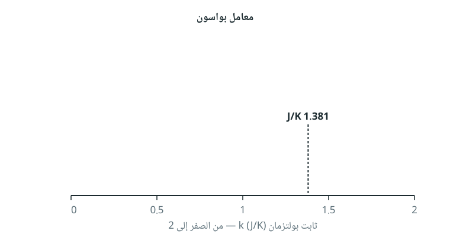

معامل بواسون
Poisson's ratio
معامل بواسون هو نسبة الانفعال العرضي إلى الانفعال الطولي في الشدّ الأحادي، ورمزه ν، وهو عدد بلا وحدة بين صفر و0.5 للمواد المتماثلة الخواص.
معامل بواسون، ورمزه ν، هو سالب نسبة الانفعال العرضي إلى الانفعال الطولي في حالة إجهاد أحادي المحور. وهو عدد بلا وحدة، لأن البسط والمقام كلاهما انفعال. والإشارة سالبة لأن الجسم يستطيل طولاً وينضغط عرضاً عند الشدّ. وقيمته للمواد المتماثلة الخواص محصورة بين صفر و0.5: الصفر يعني مادة لا تتغير عرضاً بالشدّ، والنصف يعني مادة لا يتغير حجمها بالتشوّه المرن كالمطاط تقريباً. وهو ضروري في التصميم لأنه يحدد التشوّه العرضي وتغيّر الحجم، ويدخل في العلاقات بين معامل يونغ ومعامل القص ومعامل الحجم. مثال: قضيب فولاذي ν = 0.30 واستطال 0.10% عرضاً ينضغط 0.030%.
كيف تعمل الظاهرة؟
معامل بواسون ينشأ من حفظ الحجم على مستوى الذرات. حين يُشدّ جسم، تتباعد الذرات في اتجاه الشدّ، فتقلّ المسافات بينها في الاتجاهين العرضيين لأن الشبكة تحاول الحفاظ على كثافتها. النتيجة أن الجسم يستطيل وينحف في الوقت نفسه. ولأن التشوّه المرن لا يغيّر عدد الذرات، فإن نسبة تغيّر الحجم تتناسب مع (1 − 2ν) مضروباً في الانفعال الطولي. هذا هو سبب الحدّ الأعلى 0.5: عند ν = 0.5 لا يتغير الحجم إطلاقاً في المدى المرن، وهو ما يحدث في المطاط حيث تنزلق السلاسل بلا تغيّر في الحجم الحر. ولذلك أيضاً ترتبط ν بمعامل يونغ ومعامل القص بعلاقة لا تُتركب من قيمتين مستقلتين.
العلاقة بالأرقام
ν = −ε_lateral/ε_axial بلا وحدة. وتغيّر الحجم النسبي ΔV/V = ε_axial·(1 − 2ν). والعلاقة بمعامل القص G = E/(2(1+ν)). والعلاقة بمعامل الحجم K = E/(3(1−2ν)). مثال عددي: ν = 0.30، ε_axial = 1.00×10⁻³: ε_lateral = −3.00×10⁻⁴؛ وΔV/V = 1.00×10⁻³ × (1 − 0.60) = 4.00×10⁻⁴، أي زيادة حجم 0.040%. ولو كان ν = 0.50 لكان ΔV/V = صفراً.
مفاهيم متقاربة
معامل بواسون ليس معامل يونغ ولا معامل القص، وكلها مقادير مرنة لكن بأبعاد مختلفة. وليس نسبة بواسون الإحصائية، والاسم المشترك مصدر لبس في النصوص المترجمة. والخطأ الشائع أن يُقال إن ν يقيس «قابلية المادة للانضغاط»؛ الانضغاطية تُقاس بمعامل الحجم K، وν يدخل فيها لكنه ليس هو. وأخيراً ν ليس ثابتاً في كل الاتجاهات في المواد متباينة الخواص، وليس ثابتاً مع درجة الحرارة.
حدود التطبيق
معامل بواسون معرّف في المدى المرن الخطي، ويفقد معناه بعد الخضوع حيث يتغير الحجم بثبات الحجم اللدن. وفي المواد المسامية كالإسفنج والفلّين قد تكون ν قريبة من الصفر أو سالبة، وهي مواد متماثلة الخواص لكن سلوكها الهندسي خاص. وفي المواد متباينة الخواص كالخشب والمركّبات، يلزم معامل لكل زوج اتجاهات. ولا يُستعمل ν للتنبؤ بالانهيار، فهو مقدار تشوّه لا مقاومة.

| الكمية | القيمة | المصدر |
|---|---|---|
| الانفعال العرضي في المثال | −3.00×10⁻⁴ بلا وحدة | [1] |
المصادر
- 1 The International System of Units (SI), 9th edition (2019) — BIPM — Bureau International des Poids et Mesures (2019). www.bipm.org/en/publications/si-brochure · اطُّلع عليه 2026-11-21
- 2 CODATA Value: Boltzmann constant — NIST — CODATA 2022 recommended values (2024). physics.nist.gov/cgi-bin/cuu/Value?k · اطُّلع عليه 2026-11-21
- 3 CODATA Value: Avogadro constant — NIST — CODATA 2022 recommended values (2024). physics.nist.gov/cgi-bin/cuu/Value?na · اطُّلع عليه 2026-11-21
استشهد بهذا المصطلح
الصيغتان مبنيتان من بيانات الصفحة نفسها: العنوان والتاريخ ورابط النسخة المنشورة.
معامل بواسون — Poisson's ratio. (2026). ديوان المعرفة — انفراد. https://infiradev.com/diwan/terms/term-poisson-ratio.html
@misc{term-poisson-ratio2026,
title = {معامل بواسون},
titleaddon = {Poisson's ratio},
howpublished = {{ديوان المعرفة — انفراد} — مرجع علمي عربي},
year = {2026},
url = {https://infiradev.com/diwan/terms/term-poisson-ratio.html},
urldate = {2026-11-26},
note = {مراجعة علمية: hermes (مراجعة معتمدة 2026-11-26)}
}
راجعه: hermes (مراجعة معتمدة 2026-11-26) · 2026-11-26 · آخر تحديث 2026-11-21